Why Attention？
当我去搜索为什么需要Attention的时候，搜到的回答是：
“模型处理的数据通常是序列，文本是词的序列，而序列中的远距离通信是必要的，模型需要一个工具去捕捉序列中这种关系”，“Attention在这个方面取代了CNN和RNN”
“CNN局限在于，如果要让很远的两个元素之间进行通信，他需要很高的层数去实现，其感受野受限”
“RNN局限在于，信息沿时间步逐步传递，早期信息传到后面会逐渐"衰减"（梯度消失）。”
我想直接地做一个CNN和RNN的简单实验来仔细看看这个问题，也许并不需要完整训练一个model来测试这件事情。
粗略看各种网络，无非就是前向传播算 loss、反向传梯度、更新权重。那么如果序列里两个远距离元素之间能被model 学到联系，最起码输出端那个位置对输入端那个位置的梯度不能是 0。毕竟梯度是 0 就意味着这条通路根本不存在，怎么训都没用。
例句：很高兴认识你爱玩的茂茂雨
切成 4 个词：很高兴 、认识你 、爱玩的 、茂茂雨
每个词用一个 2 维向量表示（随便像下面这样设一个），整句话就是一个 4 × 2 的矩阵:
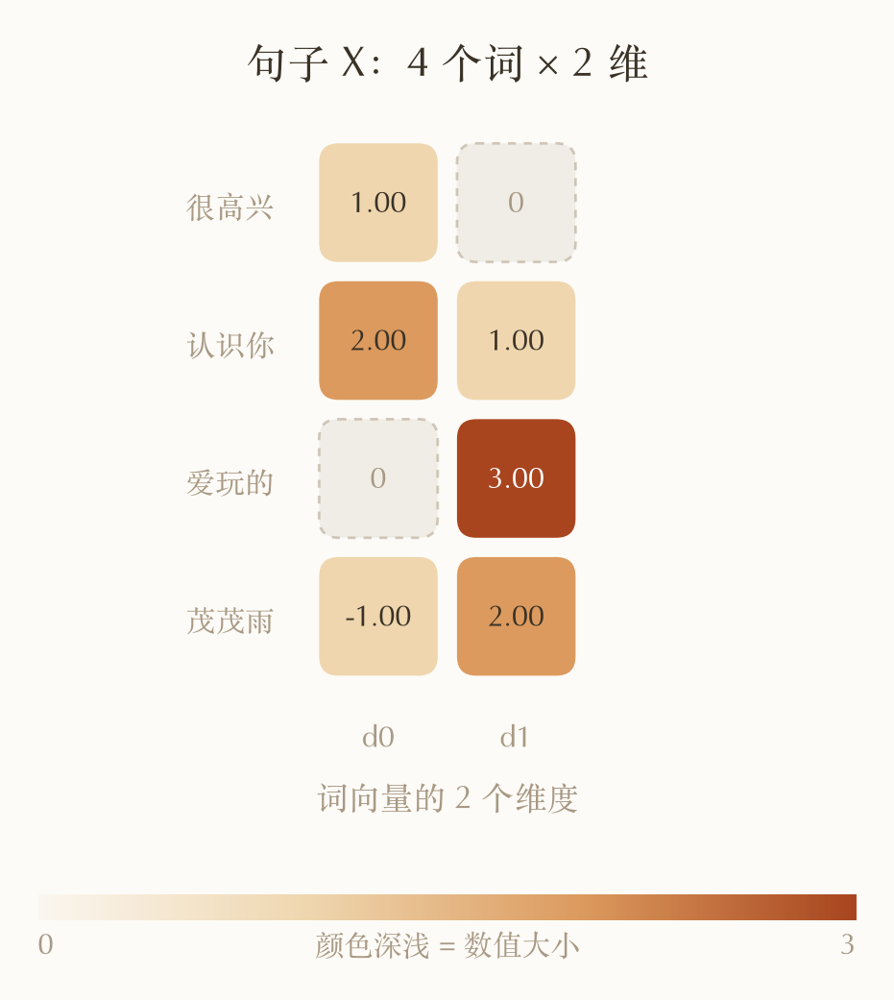
CNN 处理此序列的情况
但 PyTorch 的 Conv1d 要的是 (batch, 每个词的向量维度, 词的个数)，需要转置一下。卷积核设为 conv = nn.Conv1d(n, n, kernel_size=3, padding=1, bias=False)
第一个 n 是 in_channels，输入每个位置有几维（这里 2 维，窗口里每列的 2 个数一起吃进去）。
第二个 n 是 out_channels，输出每个位置有几维，等于“用几个核”。
kernel_size=3：窗口一次盖 3 个位置。
padding=1：两端各补 1 列 0，让 4 个词进、还是 4 个数出。
bias=False：算完不再加常数项。
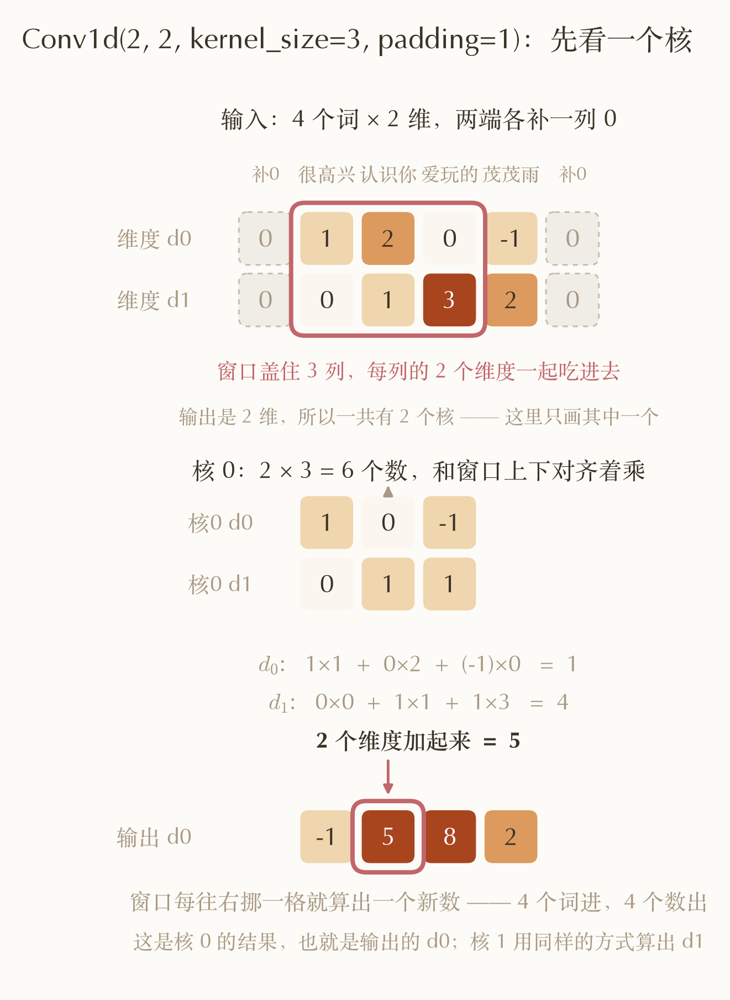
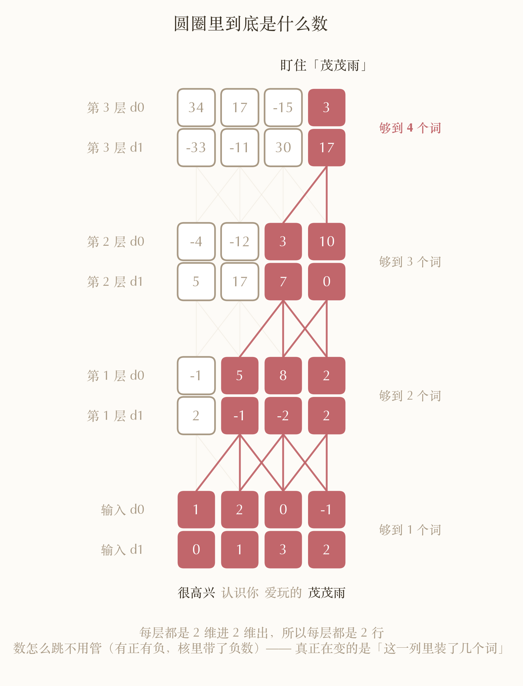
如果你同时关注一下第二层的“10”和第三层的“3”，往回追溯，你就会发现第二层的“10”仅包含了认识你 、爱玩的 、茂茂雨，而只有到第三层的“3”才完全得到了这组序列的全部信息。
在这个场景下，感受野和梯度能否传达其实是一回事。很高兴 不在 茂茂雨 的感受野里，意思就是不管 很高兴 怎么改，茂茂雨 那个输出都纹丝不动——这正是“梯度等于 0”。所以 CNN 的痛点就在于“层数低，感受野小，够不到”。
但反过来不成立：够得到不等于传得动。下面的 RNN 就是够得到但传不动的典型。
然而，想要层数少，就得增加卷积核的大小。那放到真实规模上是个什么概念？按 GPT-2 那种配置粗算一下：序列 2048 个词、词向量 768 维、核宽还是 3。感受野每层只往外扩 1 个词，要够到最远那一个得堆 1024 层，参数量约 18 亿、一次前向约 $3.7\times10^{12}$ 次乘加。
RNN 处理此序列的情况
看一下RNN的网络结构：
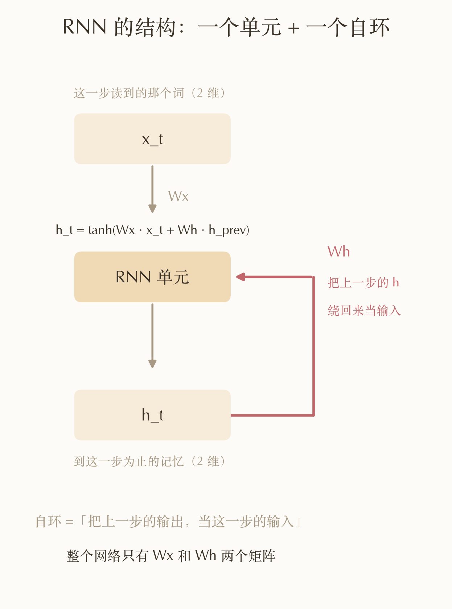
这是个很漂亮的结构，而且通过一个循环迭代的方式，就能将词与词之间的联系训练更新到同一套反复使用参数$W_x$和$W_h$里面，
真实推理的时候，只需要一份 RNN 单元，加上一个来自上一个词的记忆缓存就够了。发现它还有一个问题：batch 维度其实是能并行的，不能并行的是时间步——第 $t$ 步必须等第 $t-1$ 步的 $h$ 算完才能开始。句子多长就得串行多少步，GPU 在这件事上使不上劲。
再看看前面搜到的“信息衰减”是怎么回事，瞅一眼 $\tanh$ 及其导数的图像：
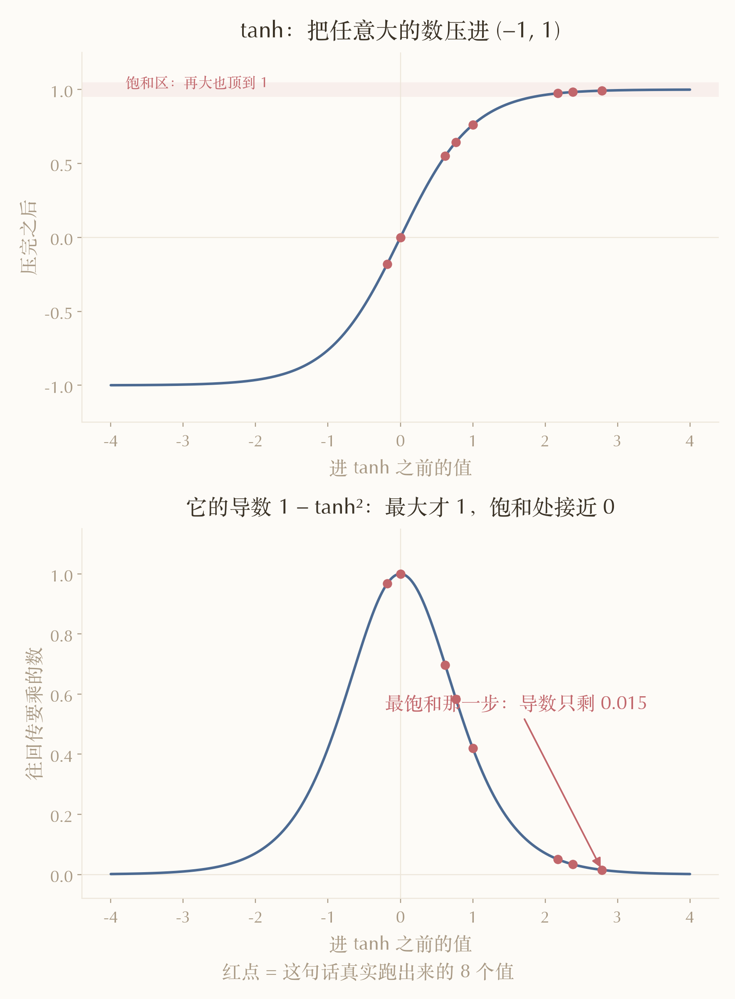
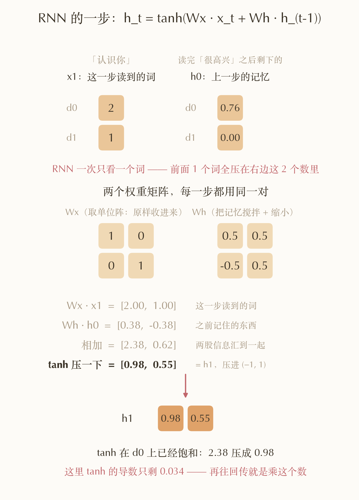
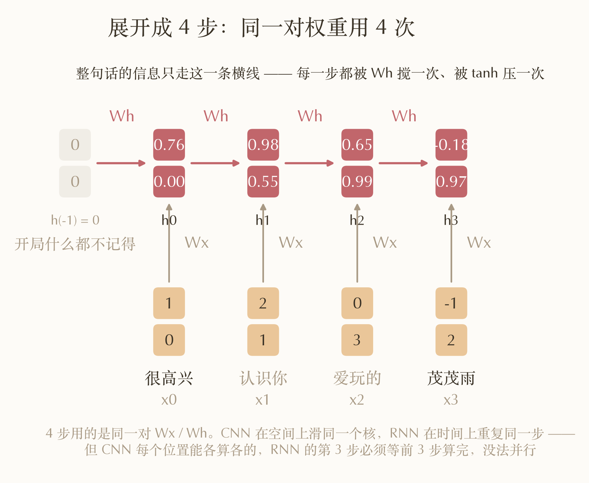
| 符号 | 是什么 | 形状 |
|---|---|---|
| $t$ | 第几个词，这里 0 ~ 3 | — |
| $x_t$ | 第 $t$ 个词的词向量 | 2 维 |
| $h_t$ | 读完前 $t+1$ 个词之后的「记忆」，$h_{-1}=0$ | 2 维 |
| $\text{pre}_t$ | 进 $\tanh$ 之前的中间值 | 2 维 |
| $W_x$ | 把当前这个词收进记忆空间，每步都是同一个 | 2 × 2 |
| $W_h$ | 把上一步的记忆搅拌一下，每步都是同一个 | 2 × 2 |
| $L$ | loss，一个标量，具体形式先不管 | 标量 |
| $\partial L / \partial h_t$ | loss 对 $h_t$ 的梯度，形状和 $h_t$ 一样 | 2 维 |
| $\odot$ | 逐元素相乘（不是矩阵乘） | — |
| $\mathrm{diag}(a, b)$ | 把两个数摆到对角线上的矩阵 | 2 × 2 |
| $\lVert \cdot \rVert$ | 向量的长度（模） | 标量 |
前向就两行：
$$\text{pre}_t = W_x x_t + W_h h_{t-1}, \qquad h_t = \tanh(\text{pre}_t)$$
反向每往回一步做这一下：
$$\frac{\partial L}{\partial \text{pre}_t} = \frac{\partial L}{\partial h_t}\frac{\partial h_t}{\partial \text{pre}_t} = \frac{\partial L}{\partial h_t}\,\mathrm{diag}\big(\tanh'(\text{pre}_t)\big) = \frac{\partial L}{\partial h_t} \odot \big(1 - h_t^2\big)$$
三个等号分别是：链式法则 → $\tanh$ 是逐元素作用的，所以 $\dfrac{\partial h_t}{\partial \text{pre}_t}$ 是对角阵 → $\tanh' = 1 - \tanh^2$ 且 $\tanh(\text{pre}_t) = h_t$，而乘一个对角阵就等于逐元素乘。
拿到 $\text{pre}_t$ 的梯度之后，再往上一步传：
$$\frac{\partial L}{\partial h_{t-1}} = \frac{\partial L}{\partial \text{pre}_t} W_h$$
一路展开到第一个词，就是连乘：
$$\frac{\partial L}{\partial h_0} = \frac{\partial L}{\partial h_3} \prod_{t=3}^{1} \mathrm{diag}(1 - h_t^2)\, W_h$$
取 $\|\partial L/\partial h_3\| = 1$（loss 的正常量级），逐步往回传：
| 传到 | 乘的是 | 剩下多少 |
|---|---|---|
| t=3 | — | 1.000 |
| t=2 | diag(0.968, 0.051)·$W_h$ | 0.684 |
| t=1 | diag(0.584, 0.015)·$W_h$ | 0.200 |
| t=0 | diag(0.034, 0.697)·$W_h$ | 0.0715 |
落到词向量上：最远的很高兴拿到 0.057，最近的茂茂雨拿到 0.968，差 17 倍。
但是 17 倍也不算什么，0.057 依旧是可以正常使用的梯度大小。那么看看序列长度会带来什么样的影响。又上面0.0715可以得到一个粗略的连乘衰减因子（$0.0715^{1/3} = 0.415$），然后我们可以计算得到：
$$0.415^{3} \approx 7\times10^{-2} \quad 0.415^{15} \approx 2\times10^{-6} \quad 0.415^{31} \approx 1.5\times10^{-12}$$
第一个数就是上表最后一行的 0.0715，说明这个粗估靠谱；后两个才是重点。
当序列长度到达 32 个词的时候，第 1 个词的梯度大小掉到 $9.9\times10^{-13}$。而参数更新一般是 学习率 × 梯度，lr 取 1e-3 的话，这一步更新量 1e-15，掉到 float32 能表示的精度以下了——这条通路等于完全不更新，死掉。
其实梯度问题可以解决，已经有LSTM、GRU之类的方法，用门控开一条不过 tanh 的通路，让梯度能直传。但这类框架还有个最大的问题是必须一步步走、没法并行。
Attention 处理此序列的情况
先看看最简单的单头 Self-Attention
定义
这一段会用到三个维度，先摆清楚，它们是三个不同的东西：
| 符号 | 是什么 | 本例 | GPT-2 |
|---|---|---|---|
| $T$ | 句子有几个词 | 4 | 2048 |
| $d$ | 输入的词向量几维 | 2 | 768 |
| $d_k$ | $Q$ / $K$ / $V$ 几维 | 2 | 64（单头） |
$d_k$ 的下标 $k$ 是 Key 的 k，不是位置索引，和第几个词没有任何关系。本例里 $d = d_k$ 所以看不出区别，真实配置里两者差 12 倍。
$X$ 的形状是 $(T, d)$，一行一个词。下文用小写表示「某一行」：$x_j$ 是 $X$ 的第 $j$ 行（$d$ 维行向量），$z_i$ 是 $Z$ 的第 $i$ 行（$d_k$ 维行向量）——都是向量，不是一个数。
$Q$、$K$、$V$ 的含义：Query（查询）、Key（键）、Value（值），形状都是 $(T, d_k)$——每个词各有一份。
$W_Q$、$W_K$、$W_V$ 的含义：三个可学习矩阵，把同一个词分别投影成「拿去问的」「等着被问的」「被选中后交出去的」三份表示，形状都是 $(d, d_k)$，读作「$d$ 维进、$d_k$ 维出」，和句子多长无关。
模型框架
在这一层网络中，$Z = \alpha V = \alpha X W_V$ 就完成了 4 个词之间的全连接。
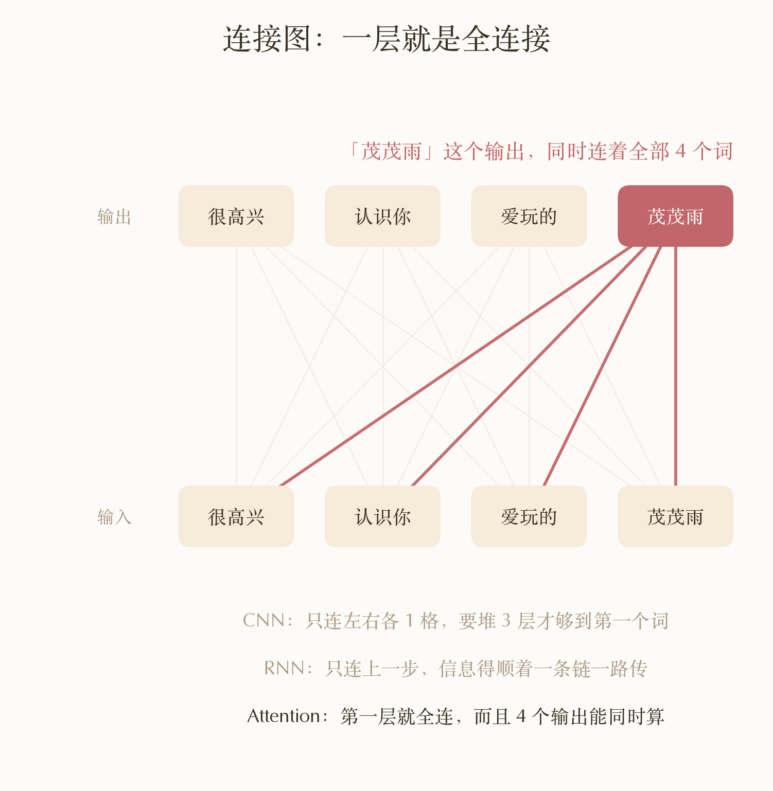
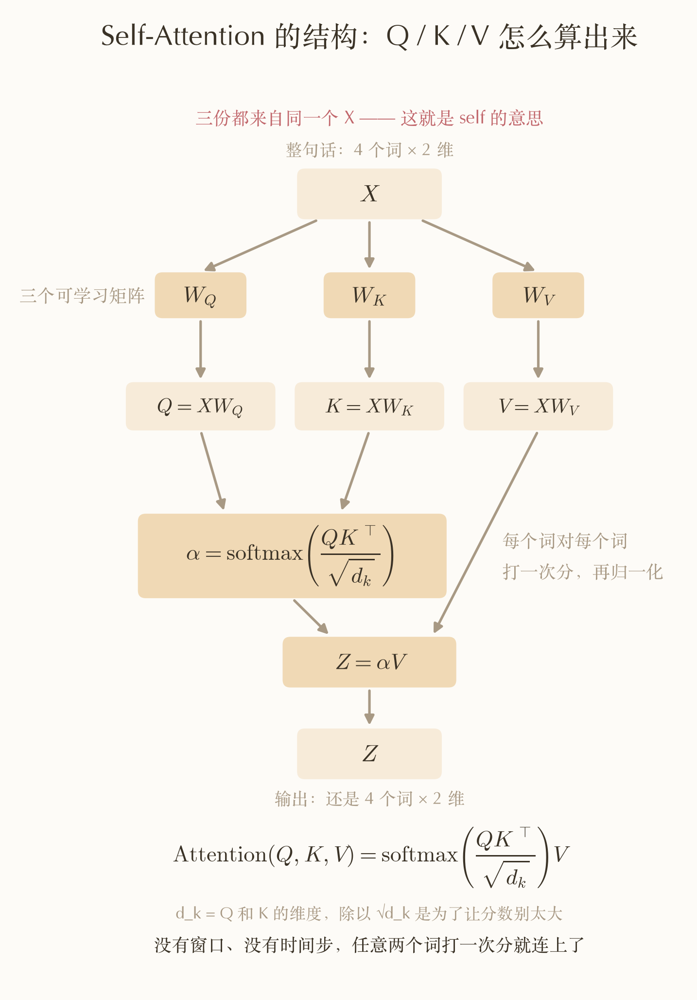
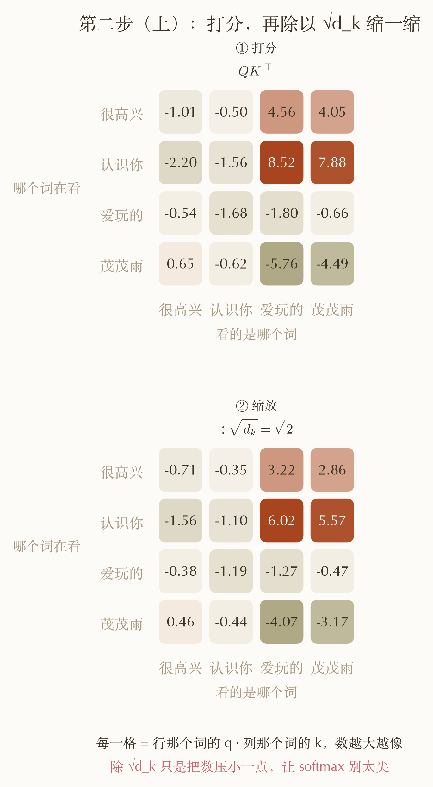
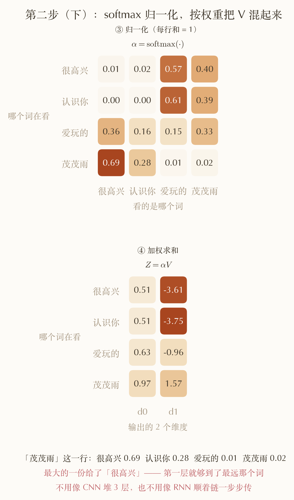
既然说到单层的“全连接”，为什么不直接用MLP呢？
其实仔细观察两者的形式，可以注意到，Self-Attention有个和 MLP 的根本区别：$\alpha$ 是算出来的，不是学出来的。MLP 里 $y_i = \sum_j W_{ij} x_j$（此处省略一下激活函数），「位置 $j$ 对位置 $i$ 贡献多少」是 $W_{ij}$ 这个参数，训练完就是常数——输入变了输出当然跟着变，但那个系数不变。这里的 $\alpha_{ij}$ 本身就由 $X$ 现算，换一句话，整张系数表都换了。
为什么$\alpha$中明明$QK^{T}=XW_Q {W_K}^TX^T$，不直接使用一个$W_{QK}=W_Q {W_K}^T$呢？
数学上其实是一致的，但 $W_{QK}$ 的形状是 $(d, d)$
以 GPT-2 为例，$d = 768$、单头 $d_k = 64$：合成一个是 $768\times768 \approx 59$ 万个参数，拆成两个是 $2\times768\times64 \approx 9.8$ 万个。
也就是说，$W_{QK}$的的秩最多有 $d = 768$，而 $W_Q W_K^\top$ 这个乘积的秩最多只有 $d_k = 64$（线性代数中简单的线性组合）。也就是实际合成的那 59 万个数，实际能表达的最多只有 64 维的特征向量的线性组合，$W_{QK}$中剩下的自由度全是白给的。算力上同理：$T=2048$ 时合成约 44 亿次乘加、拆开约 4.7 亿，差 9 倍。
所以 $W_Q$ 和 $W_K$ 不是两个独立的东西，它俩就是同一个矩阵的「瘦身分解」。我一开始觉得拆开是多此一举，但其实合并才是浪费。
序列间信息通信关系
回到开头那个问题，远距离通信到底通没通？可以看看 $\alpha$ 的最后一行，也就是「茂茂雨」在看谁：
| 看的是 | 很高兴 | 认识你 | 爱玩的 | 茂茂雨 |
|---|---|---|---|---|
| 权重 $\alpha$ | 0.69 | 0.28 | 0.01 | 0.02 |
四个权重不为0，至于这个大小就纯巧合（图上显示的 0.00 只是保留两位小数的结果，真值约 0.002），但也说明了即使是最远的两个词之间也能够保留了很大的权重。
虽然此时的权重中有不少都很小，梯度和权重在这里也并不等价，但还是完整地将前后传播写出来看看形式会更加放心。
前向一层就三步：
$$Q = XW_Q, \quad K = XW_K, \quad V = XW_V$$
$$S = \frac{QK^\top}{\sqrt{d_k}}, \quad \alpha = \mathrm{softmax}(S), \quad Z = \alpha V$$
反向先只看最直接的那条路（经 $V$）。$X$ 有三条路影响 loss：$X\to Q$、$X\to K$、$X\to V$。把三条路各自贡献的那一份记作 $G_Q$、$G_K$、$G_V$，都和 $X$ 同形状，定义为
$$(G_V)_{jc} \;\equiv\; \sum_{i,r} \frac{\partial L}{\partial V_{ir}}\,\frac{\partial V_{ir}}{\partial X_{jc}} \qquad G_Q,\ G_K\ \text{同理}$$
$$\frac{\partial L}{\partial X} = G_Q + G_K + G_V$$
下面只推 $G_V$ 这一份。下标约定：行号用 $i$（输出词）和 $j$（输入词），都取 $1 \sim T$；列号用 $r$（$Z$、$V$ 的列，取 $1 \sim d_k$）和 $c$（$X$ 的列，取 $1 \sim d$）。
$Z = \alpha V$ ，按照线性代数的矩阵计算方法，拆开写就是：
$$Z_{ir} = \sum_k \alpha_{ik}\, V_{kr}$$
对 $Z$ 的每个分量用链式法则，代入 $\partial Z_{ir}/\partial V_{jr} = \alpha_{ij}$，求和跑的下标 $i$ 是 $\alpha$ 的行，写回矩阵形式就带个转置：
$$\frac{\partial L}{\partial V_{jr}} = \sum_i \frac{\partial L}{\partial Z_{ir}}\,\frac{\partial Z_{ir}}{\partial V_{jr}} = \sum_i \frac{\partial L}{\partial Z_{ir}}\,\alpha_{ij} \quad\Longrightarrow\quad \frac{\partial L}{\partial V} = \alpha^\top \frac{\partial L}{\partial Z}$$
同理，$V = X W_V$ 拆开写是：
$$V_{ir} = \sum_c X_{ic}\,(W_V)_{cr}$$
$V$ 的第 $i$ 行只由 $X$ 的第 $i$ 行算出来，所以 $X_{jc}$ 只影响 $V$ 的第 $j$ 行——定义式里对 $i$ 的求和塌成 $i=j$ 一项，只剩对 $r$ 求和：
$$(G_V)_{jc} = \sum_r \frac{\partial L}{\partial V_{jr}}\,\frac{\partial V_{jr}}{\partial X_{jc}} = \sum_r \frac{\partial L}{\partial V_{jr}}\,(W_V)_{cr} \quad\Longrightarrow\quad G_V = \frac{\partial L}{\partial V}\, W_V^\top$$
代进可以得到：
$$G_V = \underbrace{\left(\alpha^\top \frac{\partial L}{\partial Z}\right)}_{\partial L / \partial V} W_V^\top$$
再取第 $j$ 行，就是第 $j$ 个词在$V$通路拿到的梯度：
$$(G_V)_{j\cdot} = \left(\sum_i \alpha_{ij}\,\frac{\partial L}{\partial z_i}\right) W_V^\top$$
（$(G_V)_{j\cdot}$ 是 $G_V$ 的第 $j$ 行。）
仔细观察括号内可以发现：无论第$j$行的词离某个词多远，其梯度都会进入到这个求和中，而且$\alpha$严格不为0，没有"太远了会因为梯度消失而传不到"这种情况。
小结
回顾三类model：
- CNN：要堆多层或大卷积核，最远那个词才第一次进得来——隔 2 格以上根本没有通路。GPT-2 那种规模（2048 词、768 维、核宽 3）得堆 1024 层、18 亿参数、$3.7\times10^{12}$ 次乘加；而 Self-Attention 做同一件事只要 1 层、177 万参数、$1.0\times10^{10}$ 次乘加——参数差 1024 倍，算力差 369 倍
- RNN：感受野虽然一开始就能够抵达全部词，但词量扩大到一定程度后梯度直接消失，除此之外，其解决梯度问题的变式也没办法解决“并行问题”
- 单头Self-Attention：一层直连，任意两个词之间的梯度都不为 0，且不随序列内词间的距离衰减
到这里，我认为对于了解学习Attention在做什么样的事情，以及CNN、RNN为什么在处理语言序列层面被淘汰已经足够了🤔
下一节打算看看Multi-head Self-Attention（多头自注意力）和Transformer Block